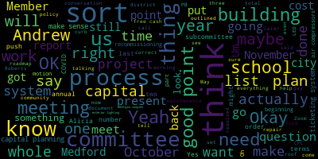
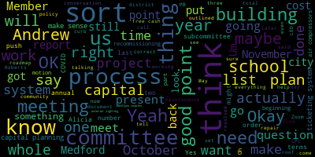

total time: 6.61 minutes
total words: 1126

total time: 19.66 minutes
total words: 2949

{kind=link}
total time: 2.86 minutes
total words: 488

[Ruseau]: All right, and so that means my audio should be going over the world. Okay, and I'm unmuted and I'm switching over to that so you can see. Are we recording? Yep. Okay, good to go.
[Graham]: Hi, everyone. Please be advised that on Tuesday, May 21st at 4.30, there will be a strategic and capital planning subcommittee meeting held through remote participation via Zoom. This meeting is being recorded. You can view the meeting live on Medford Public Schools' YouTube channel through Medford Community Media on your local cable channel on Comcast 9, 8, or 22, or Verizon 43, 45, or 47. Since this meeting will be held remotely, participants can log in or call by using the following call and number link. The meeting ID for Zoom is 970-762-6607. Additionally, questions and comments can be submitted during the meeting by emailing jennigraham at medford.k12.ma.us. Those submitting must include the following information, your first and last name, your Medford Street address, and your question or comment. Our agenda tonight is be it resolved that the strategic and capital planning committee will meet to review and update the district's capital needs assessment and planning document. Be it further resolved that the subcommittee will devise a process to ensure regular annual maintenance of the plan. Be it also resolved that the subcommittee will provide a report to the full school committee no later than June 10th, 2024. So I'll call the roll, member Ruseau. Member Reinfeld. Present. And Member Graham. Present. So three presents are absent. Here we are. So you can have that back. So I think actually what might make sense is for us to talk about the process first in terms of like how to ensure that we are doing that we are sort of getting back, I'll say getting back to post-COVID a more routine and I'll say rigorous process around capital planning to try to anticipate, try to have like an ongoing roadmap that anticipates what those big needs are so that we can be communicating with our partners in city government what those upcoming needs are, what we think that they might be, etc. And those things for which we would be wanting or needing capital funding to be able to complete the process. So before COVID, there was a process. It has changed over time. So there was a process. back right before COVID, I guess I would say maybe in the preceding year where like a sort of a four year chart that looks like this was produced. And it listed each of the buildings and what on a year by year basis was on the capital like roadmap for that building and sort of estimates of what was being accounted for. And then during COVID, Our process actually sort of got absorbed into the city of Medford's capital improvement plan, which is this document. And there's a number of things from a school perspective in this, in this document as well. I'm just trying to find the page that talks about some of those things.
[Peter Cushing]: And Memogram, this was produced by the Collins Center, correct?
[Graham]: Yes. And let's see, we have this report outlined 27 projects for the schools at a cost of 12.4% of the total costs outlined. total anticipated cost of $60 million and a percentage of total costs being 35%. So, and there's a whole lot of information about what those 27 projects are that were outlined at the time. And I think the time is, I think the time is right for us as a school committee to sort of take back the ownership of tracking all of that. And I think That is true, especially because we now have a electronic ticketing system for all of our like maintenance. projects and requests across the district right so work orders can be put into like a formal tracking system that I think. can maybe help us sort of make light work of what these capital requests are so that we can then put them on the roadmap. So, Dr. Cushing, I was hoping you could tell us a little bit about how that system is working versus like what we used to do, which was ticketing system of sorts, you know, but via email and much harder to sort of report and track. So what kind of capabilities do we have today?
[Peter Cushing]: Yeah, so we now have the system is known as Operations Hero, and it is a full service ticketing system for both custodial for maintenance and technology if we want. Presently we're running our ticketing for technology under a separate system, but we're going to see how this system works to be able to merge. But as far as custodial and maintenance, what happens now is we're having principals, and assistant principals and directors enter. We were worried, I was worried about just opening the ticketing system up to every employee in the district, that it would be flooded immediately with everybody's concern from the lowest to the highest need. And I was worried about the ability to filter what was high priority. So we're doing essentially a soft open. We do have about 40 tickets in right now. are ranging from roof leaks to fixing broken water filling stations to a number of other issues that are coming up. We have training scheduled for our maintenance staff because what's really nice about this ticketing system is as we install new equipment and as we maintain existing equipment, We can put QR codes on them so the equipment will have a life cycle so that we'll be able to see the maintenance history of every piece of equipment and every district asset as we move forward. And we will be able to start pulling reports from them. That's one of my trainings that's scheduled for upcoming. So did you not list custodians?
[Ruseau]: Not yet. OK. Because they just seem like a group that- Yeah.
[Peter Cushing]: We're going to start with senior custodians, who then can distribute the work to junior custodians and make sure, as their contract states, that it's well organized and distributed fairly.
[Ruseau]: My experience is that custodians actually run into a lot of things. Yes.
[Peter Cushing]: Oh, you mean to enter? Yes. Yes. We will. We will do that as well. Yes. Obviously, teachers do, but you know.
[Ruseau]: custodians are in every room hall every day so.
[Graham]: Yep. Okay so then would it make sense for us to identify the things that are on this plan that maybe still aren't done and need to be done? Yeah. and push them into the system, as well as to go, maybe ask you to go through the list of 27 projects in the city's capital plan and push those in so that we can generate a list. And then, you know, perhaps what we, so that's like startup, right? So we can get everything sort of pushed into the system. And then I'm wondering if on an annual basis, we set some sort of like timeline or schedule around like, when will we have an annual capital planning discussion? So that this committee sort of has that clear marching order, maybe we do it later in the evening. So it's not such a like, sort of working session, but more of a presentation of what those things are. So the community sort of can understand what those things, what those what those plans are and when. And I think my suggestion would be that that happen Not in May. But I actually am almost wondering if we set this up to be like a November, December activity so that before the halfway point of the year and long before budget and long before free cash certifies, like we are proactively being able to like say and report out. Um, what, you know, what we believe that we need. Does that make sense?
[Peter Cushing]: It makes sense. It's also, I wonder if it's this committee, um, that would be really, this subcommittee to be really helpful for me and other people working with me on operations to say, all right, when are we going to make asks of this new stabilization fund? And, um, you know, prior really prioritization of projects. I know I've presented on safety and security. We all know that our new schools, which we should not call new schools anymore, are now approaching midlife. at 22 and 24 years old and that, right. And I mean, so it's, and so moving forward with various projects, there are certain things like the HVAC projects at the Andrews and New England, replacing kitchen equipment, various things along those lines that we just want to make sure that the committee is well-informed, but is also approving expenditures. As an example, we have done significant That as electric rates rise. All right, we're using less electricity, but we also need to pay for those over 60 month payoff. That's on bill financing. All right, but our usage would be much higher and our costs would be much higher. without lowering our carbon footprint. So we've done that at the end, we've done that at the McGlynn, we've done that at the Roberts, we've done parts of that at Medford High School. Even though Medford High School is sunsetting, hopefully, pray, you know, that's still six years out. Yeah, five years. A lot of electricity. Right. So, but I would like to hopefully at some point present, say, the Brooks and the Missituk as the last two schools, You as the body have the ability to look at the numbers and give approval, not give approval to these $300,000 projects.
[Reinfeld]: Yeah.
[Peter Cushing]: Yeah. And I mean, sorry, go ahead.
[Reinfeld]: No, my question is how this intersects with the building and grounds subcommittee, but I think your question was more directly related to it.
[Graham]: I think that's a good question. Buildings and grounds has historically like done many different things. But in its like last iterations, they were focused more on like, community driven, like beautification efforts. And like, the more like, tactical day-to-day stuff. So, and that may still be the right thing for them versus, I'm almost thinking like this committee will get together to sort of craft what ultimately according to our policy really should be happening at a committee of the whole. So if we think about like doing our work in October to collect, to make sure that like we have, you know, we have a report out of the ticketing system, we can sort of I think it would be helpful. If we could craft what we think is like the right. Prioritization and then bring it to a committee, the whole, to present that. To the entire committee. So we have the entire committee's involvement in that. That might make some sense in terms of like a flow. And then certainly. Because the whole committee's there,
[Ruseau]: Usually not, which makes the numbers, but also I'm thinking that like so we as a full committee would set out and put our stamp of approval on the capital improvement plan annually. And there's a bunch of input. Before we get to that meeting, we don't need to know about the paint fixes here and there and the water filter replacements. And obviously, when Dr. Cushing goes through all of the training and reporting, he'll be able to give us a report that's a meaningful starting place. As a committee would approve it and that the individual items, you know, we would send that over presumably to the city for a request for the funds. They would give us a certain amount, but they would not get to decide the order of that list like we we've decided this is the order of what we're going to do. And this is the request that we're putting how much we want, and you give us as much as you can. And then we starting at the top of our list go down, but then each of those projects actually seems like would be things that would go into their buildings and grounds committee to monitor and check on progress and like, how is it happening? That's just my thought.
[Reinfeld]: No, that makes sense. So the other thing I was going to say, when you said it's time for the school to take this back and make the decision, absolutely. But I think we need to build into whatever our procedure is, a regular like report out according to the city or according because we need to be in their plan in their capital planning.
[Ruseau]: Yeah.
[Reinfeld]: Yeah.
[Ruseau]: Yeah, that intersection, what our priorities are, that intersection is a very interesting one, because there there may be projects that are on our plan that the city in whole manages in every imaginable way. And then projects that we are managing in whole and then projects where we're both managing it. So like what it looks like on their plan is an interesting question. Like, I mean, cause do we want their plan to just have like a, you know, if it was a pie, like there's a pie slice and it just says schools, or do we want their pie to have our, you know, like our list may in fact be a hundred items long.
[Reinfeld]: Their presentation is not intended to be at that level of detail, which is why I like what they're doing, you know, they're turning all municipal roofs to solar right like we want in on that we've got a part of that right.
[Peter Cushing]: I think also we have to, we also being in on that, I think we also have to make a decision like we're not just going to do X slipper roofs. No, we want a full roof replacement with full insulation and it will last for another 30 years. Right.
[Ruseau]: Yeah. That's where taking it back is really the point.
[Peter Cushing]: Yeah. I also think that the difference between buildings and grounds and capital planning is that capital planning should be big vision, kind of setting the standard for where the district needs to go with its about 1.2 million square feet of space over our multiple buildings. And as one example, I was planning to submit a request to CPA to do a historic assessment of the Curtis Tufts to see what that facility would need. Now, given the events of last night in our discussion to co-locate, is that something that we should still continue? But that's something I see as a capital planning decision, kind of guiding the leadership of the district.
[Graham]: So two things sort of come to mind. I had a conversation with Alicia Hunt last week. And we were talking about this process of recommissioning buildings, which essentially looks at everything and says, here's how you restore this building to its original purpose and function. And this is what you have to do in order to get there. And eventually, the idea is we should do that one building at a time in rotation over a number of years. And then no building is ever more than like six or seven years out. And that's enough to like have that sort of big picture point of view. The city has indicated a willingness to do that across this, for all of our outbuildings, not this building, not Curtis Tufts, right now. Alicia would, her opinion is that the OPM that they're bringing on to do the Andrews McGlynn project, they are the right people to help us do this too because of their deep familiarity with the district. And so she was definitely like sort of favorable to working with them to help facilitate that process. But to her point, like when you recommission a building, what you get out of it is a list of like problems to fix.
[Ruseau]: It's not recommissioned at the end of the process.
[Graham]: It's the beginning. It's the beginning of the process. It's basically the creation of your to-do list. But all of those things should feed either work orders for the maintenance team to do because they have capacity to do X or Y or Z, or something that has to go on the capital plan. So really, the output of the recommissioning study should go into the ticketing system so that we have one place for all of this to go. So I think Alicia can be a real ally in that and she's indicated a willingness to attend meetings provided that we can like say hey this is the meeting I want you to attend because she's got a lot on her plate.
[Ruseau]: That's great news. I like that. That makes a lot of sense. I also like you know the if we can do the recommissioning studies pretty much all at once then we don't end up with a scenario where one school is getting
[Graham]: something different.
[Ruseau]: Lots of lovely things, while there are things that are more serious at other schools that just haven't been put on the list yet. Right. And, you know, that having all those at once will allow us to prioritize from a district perspective.
[Peter Cushing]: Also, not to discount our current OPM, however, the city of Medford has recently contracted with three architectural firms for what they're calling house doctor services. Say again?
[Ruseau]: I never even heard these words.
[Peter Cushing]: And basically they're on-call architectural firms to assist with various things. And one of those happens to be the original architect for the five schools.
[Graham]: Is that HMFA? Yes. Yeah. OK. And so they're sort of another potential that could be part, you know, be part of the conversation.
[Ruseau]: Am I wrong to just, you know, just to check me on this, like that any OPM and anybody we hire to do this is gonna provide us a reasonably functioning, the reports not look terribly different from one to the next.
[Graham]: No, probably not, no. And it could be that BTQ, I think that's their name, Does the OPM work?
[Peter Cushing]: They're our designer. JLL is the OPM.
[Graham]: OK. Yeah. OK. I thought she was talking about B2Q to actually execute the recommissioning study. But anyway, we can find that out. I'm not overly concerned about it. The other question I had is, timing-wise, if we were to say our process is from October 1st to October 15th, We're going to push out a proactive email to the principals of the buildings to say, if there is something that belongs on our capital plan like speak now submit your tickets, so that we can we can catch all of those and categorize them. And then between, you know, late October early know, maybe. Late October into November, maybe we'll give ourselves the month of November because it's November and you know, it's a short month. We sort of meet and put together sort of a starting point. And then in December, one of our meetings becomes or part, you know, part of one of our meetings becomes a committee of the whole where we review that. That timing all works in the lead up to like, free cash being available if we are dependent on free cash for something. It also predates or precedes our budget cycle.
[Ruseau]: Because some of that stuff will not be stuff that can be waiting for.
[Graham]: Correct. And presumably if there's a stabilization fund, you could like tap into that at any time, but also it's not like an endless pot of money. So that prioritization is needed. The one question I have is where does the CPC Yeah, I think that's a good point. I think that's a good point. I think that's a good point. I think that's a good point. I think that's a good point. I think that's a good point. I think that's a good point. I think that's a good point. I think that's a good point. I think that's a good point. I think that's a good point. I think that's a good point. I, I don't exactly know like when are their applications do I would just want us to a rolling to like I did too. I think there are certain things that are rolling, but I, but I thought there were like rounds. So I would just want to make sure like wherever that fits like It all fits into this process because I would hate for us to be like, this is great. And we could get CPC funding and like, oh, we just missed it. You know, I don't want us to like set Oh, okay. Why a
[Reinfeld]: Round opens July 31st. Eligibility forms due September 10th. Full applications due October 8 and 22nd. Application presentations to the committee. That's for this year.
[Peter Cushing]: I'm also submitting an off-cycle application for three bicycle repair and bike pump stations to be installed at the McGlynn, the Andrews, and the high school.
[Reinfeld]: I love that. In special circumstances, off-cycle applications may be considered. Applicants must demonstrate an emergent public need and evidence of seeking alternative funding to the grant.
[Ruseau]: So I think this timing works well because we will actually sort of know. We'll finish the budget. We will have an idea. I mean, pre-cash will have been certified. Anything going into stabilization fund will have been completed by July 1. So we will really be
[Reinfeld]: way ahead of the game and like here's the list of things and we're just sitting around waiting for you know the the free cash certification city's budget picture to come become clear yeah okay um in response to your comment about the principles and i think we need some threshold guidelines on what constitutes okay little project i like that yeah i
[Peter Cushing]: I think Jerry could actually really give good information on what constitutes a capital project. Hi, Jerry. Hi, Jerry.
[Ruseau]: Do you mind sitting over here? We have a video right there. Oh, I see.
[Gerry McCue]: Well, DESE publishes guidelines for net school spending and I will refresh my memory on the current guidelines, but typically any project that is over $150,000 per project per school would be excluded from net school spending. which means it wouldn't count towards the required spending to access Chapter 70 funds. So it's 100% on the city. So when I was in Chelsea, we tried to put those projects in the capital plan for city only funding and then projects that wouldn't meet that requirement or wouldn't meet that threshold would be in the The school budget is not an issue if you happen to do a $200,000 out of the school budget. It just wouldn't count towards net school spending at the end of the year. And typically, the city is way over net school spending. So you'd never put your Chapter 70 funding in jeopardy by doing that. Got it. And then the interesting thing about the McGlynn is that's really two schools, so you're going to have a $1,000 limit if you were doing a project, say, HVAC that affected both schools. you could split the cost of that project over those schools. And then that would be true if you had funding to do something over four or five schools, then you could allocate it for the purpose of the limitations.
[Ruseau]: Now, because the McGlynn is two schools, is that limit in place if we really just do something like in one of the sides?
[Gerry McCue]: It's just treated- Yeah, we just applied at one school.
[Ruseau]: But then the limit is not 300 for that. It'd be 150. OK, great.
[Graham]: So I have found two other presentations beyond the 27 projects that are listed here, so in the city's plan. And so I just wanted to run through because they're old, but I don't think that necessarily means they're not that they're done. So this list has, it's mostly lighting. So Peter, I think that's a question in terms of cafeteria and exterior lighting.
[Peter Cushing]: So that has, so on those, it also mentions hallway lighting in some places. So the entire McGlynn with some spotty areas has had all, and by spotty areas, I mean like a few offices, And a few locations that I'm working with the vendor to have replaced. We have replaced all of the lighting at the McGlynn and Roberts. And we're currently working on an exterior project at the Andrews and the McGlynn. But all of that has been replaced with high efficiency, 25-year lifespan, no need to replace anything, LED, that both daylight harvest, so they will turn off if it's bright enough, and they also have dimming capabilities, and then automatic off after a set period.
[Graham]: Okay, so I just want to finish going through this list. So the Roberts School exterior lighting, are there exterior lighting needs that have not been addressed?
[Ruseau]: Nope, it's been addressed.
[Graham]: Okay. And then Missittuck has not yet been done. Brooks has not yet been done. Curtis Tufts.
[Peter Cushing]: Curtis Tufts has been done.
[Graham]: Whole building LED.
[Peter Cushing]: I can't say whole building. I know hallways. I need to check on the classrooms.
[Graham]: Okay. So if you can check on that one. Yep. Automotive shop LED?
[Peter Cushing]: All shops have been 100% upgraded to LED lights.
[Graham]: OK. Andrews, halls and stairwells?
[Peter Cushing]: Complete.
[Graham]: And whole building LED?
[Peter Cushing]: Yeah. I need to check on the classrooms for Andrews. There's some question there. Because if you visit the Robertson and McGlynn, And the other schools, the Mississauga, the Andrews, and the Roberts, you'll see that what were hanging light fixtures have now been flush mounted, which teachers have reported, the few that I've talked to about it, like, wow, it just really opens up the room. There are still hanging light fixtures in the Andrews. So I don't know if those were just light bulb upgrade and replacements for LED.
[Graham]: Got it. OK. So you can check on that one. Also on the Andrews School, and this list, by the way, this list is from like 2017, 2018. So I just want to make sure there's stuff that's still there. We're taking it forward. Andrews School, it says controls upgrade for ADR. And I don't even actually know what that means.
[Ruseau]: I would have to look it up. That's a feedback thing.
[Peter Cushing]: I don't. Let me do it quick.
[Ruseau]: Automatic dimming, I don't know.
[Reinfeld]: All-day refrigeration, no. ADR systems automatically adjust HVAC.
[Peter Cushing]: Yeah, and I think that that control was replaced. Because of the pandemic.
[Graham]: Yeah. Oh, that's not us, that's public safety. Okay, Andrews. You'll find it funny to know that they said the Andrews HVAC upgrades were going to cost $25,000.
[Peter Cushing]: So I also did just share with you, I located from our previous finance director, Mr. Murphy, he had put together a CAP, a CIP. And so I've shared that with everybody around this table. But I would say, and this is no fault of Mr. Murphy, but I would say that a comprehensive researching of what things cost, the numbers that are in there, I don't know are accurate. And unfortunately, just in my research on some things, are woefully more expensive. Got it.
[Reinfeld]: I'm so sorry. Does anyone have nut allergy? No.
[Ruseau]: No, but thank you for asking.
[Graham]: OK, so then the second plan, just to bring us to current.
[Peter Cushing]: This is draft number three?
[Graham]: Yes, draft number three. Two air compressors at the Brooks. five air compressors at Missittuck, two air compressors at Roberts. They all were replaced, is that correct?
[Peter Cushing]: In the summer of 2019, there was a free cash allotment from the mayor and the city council at the time that allowed for all of that compressor work to be completed.
[Graham]: Okay. Andrew's new roof, that actually got done.
[Peter Cushing]: So I'd like to qualify new roof because what it was, was a, I'll call it a film that was put over the entire roof. It's white that helps reflect the sun, but it also extends the life of that roof. And Alicia Hunt has said numerous times that it extends it significantly. And I believe her, but I always question, like, should we consider the R value insulation on that roof as part of, you know, where we move forward.
[Graham]: OK. McGlynn Complex had auditorium seating work for $25,000.
[Peter Cushing]: So I would say that it happened because there really isn't any issue with the seating in there. But the seating in the auditoriums definitely does take abuse. I think there are about 25 seats in the high school auditorium right now that are damaged and need repair. OK.
[Graham]: And then at the high school replace or replace repair fire alarm sealing system in 2019.
[Peter Cushing]: So I can't speak to whether or not that was done, but I do know that we did significant fire alarm work this past fall. The fire alarm system that meant for high school requires constant attention. Yeah, yeah, as members of signs the warrants he knows.
[Graham]: OK, so and then we had. I'm going to put security improvements to the side. I know that's an ongoing conversation. The Andrews outside curb repairs, those curbs are still not installed. Is that correct?
[Peter Cushing]: So there are some that are just sitting there. There are some that have been done. My whole time on the school committee.
[Graham]: And then there is an item here for the McGlynn complex, asphalt and tire complex, including Andrews side curb repairs. Um, so all of that is still like in progress, right? That's not complete.
[Peter Cushing]: I would consider it in progress. Last year, the DPW, um, ground, ground the road down. Yeah. I mean, it was significantly worse than it was, and they did a temporary like paving job, but there's a longer term plan on the city side since the city took that over. Prior to this, that, that road was the responsibility, 100% of the Metropolitan Public Schools, lighting, curbing, everything.
[Ruseau]: I think it just changed last year.
[Peter Cushing]: We don't have the capacity to manage it.
[Graham]: Okay, so I'm not going to worry about some of the later things for high school. McGlynn complex, roof rebuild, air compressors, and chiller contact. contact compressor, all of that is being handled with this HVAC project that will go in for the system to be tracked.
[Peter Cushing]: The roof rebuild is somewhere, that's up in the air in question, but what I did notice in one of the documents there from either Collins, when those came out, they suggested a five-year roof rebuild with one each year, and those plans are at least five years old and we have not stopped.
[Graham]: So we would have some sort of roof assessment, which I think we can sort of let recommissioning guide priority there, which is fine. The other thing that's on here looks like water heaters at the Andrews.
[Peter Cushing]: The water heaters have been replaced.
[Ruseau]: We thought they were going to cost $80,000. What were they actually?
[Peter Cushing]: I can't remember what they were, but it was another number. And for full disclosure, the hot water heater at the Brooks has failed. It's original to the building. And we're currently trying to work through what that would take, but I think that we should go. My recommendation is that we go through a formal RFP process. I was seeking an emergency waiver of that, but we're able to mitigate the need for hot water right now. So I think it's in the district's best financial interest to go through an RFP process.
[Reinfeld]: To what extent does Waterheed's failure at the Brooks predict Robert's?
[Peter Cushing]: They already failed.
[Reinfeld]: They already failed. Okay.
[Peter Cushing]: So there was a prediction, but it already happened. So they were those were originally 400 gallon water heaters because there was no way to if you ever want to take a tour of the mechanical rooms of the district, there's no real way to get things in and out. And so rather than doing to doing one 400, there are two hundred and ninety or a 200 gallon water heater.
[Ruseau]: The one here is pretty cool. There's stuff that is never going to be gone until they demolish this building.
[Reinfeld]: I live in an old high school.
[Ruseau]: Is that stuff still there too? Probably.
[Reinfeld]: Maybe the condo conversion in 84.
[Gerry McCue]: That could also be for redundancy in case one fails. We have some, which is a good way to go.
[Graham]: So we said CPC applications are like July? Opens in July, due in September. OK.
[Ruseau]: What was the July 31st date?
[Reinfeld]: I just want to be able to put that on our board. That was eligibility. So you should be submitting a letter before you do a poll. Oh, OK.
[Peter Cushing]: OK, got it. Jen, do you remember what the playground services cost? I can't. I mean, I can look it up. I'm just saying it was $15,000.
[Graham]: No, no, no. I think they were the $120,000. Yeah.
[Peter Cushing]: OK, all right.
[Graham]: Yeah, I think they were the $120,000. They were huge. Yeah, they were not inexpensive.
[Peter Cushing]: Well, I know McQuinn's was going to be half a million.
[Graham]: Yeah. And that was, you know, many years ago. Okay. So then I think it was, sorry, the surfacing at Roberts was 109, 540.
[Reinfeld]: Yeah. And what year was that in? That's like early when we started. Yeah. Wow.
[Graham]: Um, okay, so I think from a sort of process and cadence perspective and Jerry like, please weigh in what we talked about was like. a desire to use the ticketing system, sort of push all of the things into it so that it can come, it can be tracked there. And then at the beginning of October, we would send out a reminder to principals that like, we're gonna do our, we're gonna start our capital planning process for the annual year. And so if they have anything else, they need to like get those things into the system so we can be considering them. And then in October and November, this committee will meet to like, lisa smith, PB, Lupita D Montoya PB, she-her, PB I think we should invite Alicia to our like our subcommittee meeting. especially because I think that is more likely to be happening in her work day, which might be easier for her. And then certainly she wants to come to the committee of the whole. So that's sort of what we're talking about in terms of sort of revising our process. Does that make sense to you?
[Gerry McCue]: That makes complete sense. You finish up the capital end of February, middle of March maybe, and then you're into your budget cycle.
[Graham]: Perfect.
[Ruseau]: And I don't need your notes to write this up. Yes, I couldn't. This is where the audio is.
[Graham]: And I think that's fine. So I think the next step. is that we probably can present the process to the committee. I'm happy to write it up after we meet so that everybody knows what to expect. That is actually something that we do need to do in one of our upcoming meetings in June, because that's what we said we would do. And I think, Peter, I can pass these old items to you to put into operations hero. And then maybe. Maybe we even like you tell us when you're ready to meet with like sort of everything that you can see pushed in and we can look at what that reporting looks like and tweak it even in advance of this next official cycle. So I would be happy to like do that on Zoom over the summer at some point if there's a time that works for everybody, just so that it happens when things are not quite as chaotic as the beginning of the school year.
[Reinfeld]: We made a to-do list for Peter of things that he was going to look into. Yes.
[Graham]: Do you need that investigated before? I don't think we need to investigate it before we tell the committee what the process is. But I think before we meet in the summer, yes. Does that make sense? OK.
[Peter Cushing]: I mean, I feel like I welcome summer meetings on this, just so you know.
[Ruseau]: Yeah.
[Peter Cushing]: And I think I'm nuts, but I. No, I understand.
[Ruseau]: Well, we do think you're nuts, but that's not really.
[Reinfeld]: That's not why.
[Ruseau]: Yeah. I certainly have enough information to actually draft a policy. Based on. Repeating it all for Jerry. And then I can. Do we want to have another meeting here or should I just like.
[Graham]: I don't think we necessarily need to, if. If you're willing to take a crack at writing the policy on our behalf.
[Ruseau]: School handbook policy, like that format feels like that would be good for this as well. You know, date ranges, phases, who's responsible. And, you know, literally a sentence for each phase is sort of like, why are we doing this? And then bullets about the things that will have to happen, so.
[Reinfeld]: Okay, do you need any, do we need to include any information about the relationship with building and grounds and or the road?
[Ruseau]: I'll add that in there, sure. I mean, because I think we, what we thought was, Terri, was that the buildings and ground would sort of like get the projects to, once they are in action, like once they're funded. Yeah. Okay. Rather than here opening. Right. Yep.
[Gerry McCue]: Yeah, and then, I mean, for some of them we can access, these house doctor contracts are available, so we identify a project, we talk to one of those firms, get a scope of work to do the project management, write any kind of construction documents that are needed. So yeah, do you have any?
[Ruseau]: So one of the things we talked about earlier was they do the bidding too.
[Gerry McCue]: I mean, they'd produce the bid documents for the women. Nice.
[Ruseau]: Well, that's I like easy. Not cheap, but I mean.
[Gerry McCue]: Right. I mean, but that's what you're going to hold the contractor accountable. So they can be precise.
[Ruseau]: So one of the things we talked about was we're going to have the school's capital plan. And the Collins Center document has just all, it's separated, but it's still, it's like this big mashed pile of capital for the whole community. And one of the things I'm curious about, if you've seen in other places is like, so we have our capital plan and then the city has a capital plan. And do we like the budget? Like the Medford Public Schools budget will just be school department, a number. Is that kind of what you think happens in other communities where in their capital plan, it says school department and a number, or do they have our plan sort of like blown out into theirs?
[Gerry McCue]: Yeah, well, it would be, if they do it on an annual basis, so there'd be a list of all the city departments, and the school department would be one of them, and it would list the projects that roll up to a total number that's in the city capital plan. And of course, it has to be accepted by the city, so they have the option to say, we don't have the bandwidth to do it. But that's when we kind of through budget management, we have sufficient money, you know, at the end of the year, we could maybe accommodate a project to kind of spend down our money that falls through the cracks. Or sometimes it's, as you're finding out by the time you go out to bid, you're $100,000 short. And so sometimes it'd be a combination of city operation funds and capital if needed.
[Ruseau]: But the actual spending and all that, your office is essentially who deals with that stuff. So, cause I'm for the, I was going back to the definition. So if it's actually capital, it's not in our budget.
[Gerry McCue]: Well, it can be in our budget, but it's how you report it. So the whole end-of-year report is designed, well, it collects a lot of financial data from across the state, and then it's also used for compliance for net school spending. So there'll be DESE publishers on their website, every community's compliance with net school spending, and it determines that compliance from the end-of-year reports. So if we are managing a project and it's over $150,000, there's in the account classification system, there's one spot where you put the projects that you can charge to school funding. And then there's another spot where you put the projects that are outside of school funding. And so there's also like large equipment purchases can fall outside of net school spending too.
[Ruseau]: I'm glad I don't have to do this stuff daily.
[Gerry McCue]: Yeah, it just like gets into your muscle memory eventually. But I can send you the language that might help you with the policy. Thank you.
[Graham]: Great. So it sounds like maybe we just need to make a motion to present our policy and process to the school committee and that member Rousseau is going to draft on our behalf. I'll make that motion. Motion by Member White. I'll second that. Seconded by Member Ruseau. Oh, we're in person.
[Ruseau]: Yeah.
[Graham]: All those in favor? Aye. Aye. OK. All those opposed?
[Ruseau]: There's only three of us, so.
[Graham]: Only three of us, so we're good. Motion passes.
[Peter Cushing]: Can I just add a quick update of a major capital project that's going on right now? So the McGlynn Universally Accessible Playground is in the neighborhood of 50% completion. And it's, I hope that members are able to join one of the two tours over the next two weeks. it's really coming out very nicely. It's going to be a representative project of, I think, what good planning and good community involvement is. And I know Member Graham came last week so she can speak if she so chooses. But it's also been a tremendous learning experience at a much smaller level. for working with OPMs, working with contractors, the building process as it relates to how a new Medford High School will come about. Just, you know, the amount of detail that we need to have focused on even very littlest things is really going to be critical. And I'll just give an example, like alternates, right? We need to make sure that if we're married to something, then there is no alternate, and be prepared to spend for that if it comes back at a higher price, or understand what the alternates are. There's really nothing that's disappointing in the McGlynn playground. It's just those types of alternates coming through.
[Reinfeld]: Is it worth making a presentation on this to the MSBA building committee or not yet or, or, I mean, I know, I know, I know that she did the podcast. Yeah.
[Graham]: Yeah. I did see that she did that. Yeah. But, um, yeah, and I actually got to join the playground last week. Um, and it was awesome.
[Reinfeld]: I believe I signed up for Thursday. Yeah. I'm waiting for the official. calendar you're good yeah at least you just said she was gonna send one so yeah okay but it's in my calendar i'm skipping another meeting for it sounds great sounds like better than whatever meeting that was yeah um okay is there a motion to adjourn motion to adjourn so seconded by right bill all those in favor aye
|
total time: 6.61 minutes total words: 1126 |
total time: 19.66 minutes total words: 2949  |
total time: 2.86 minutes total words: 488 |
|